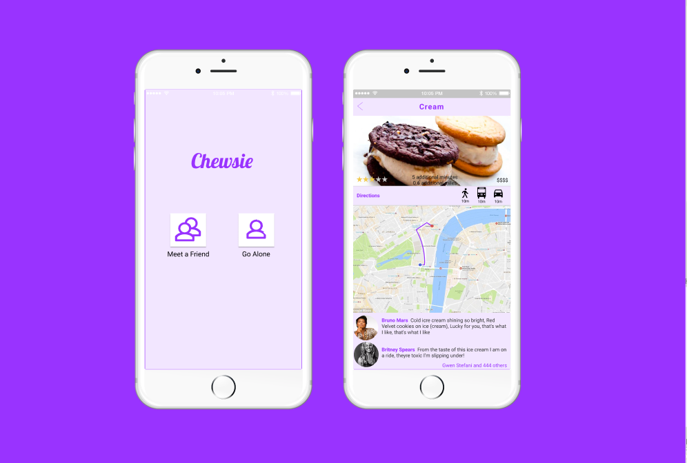
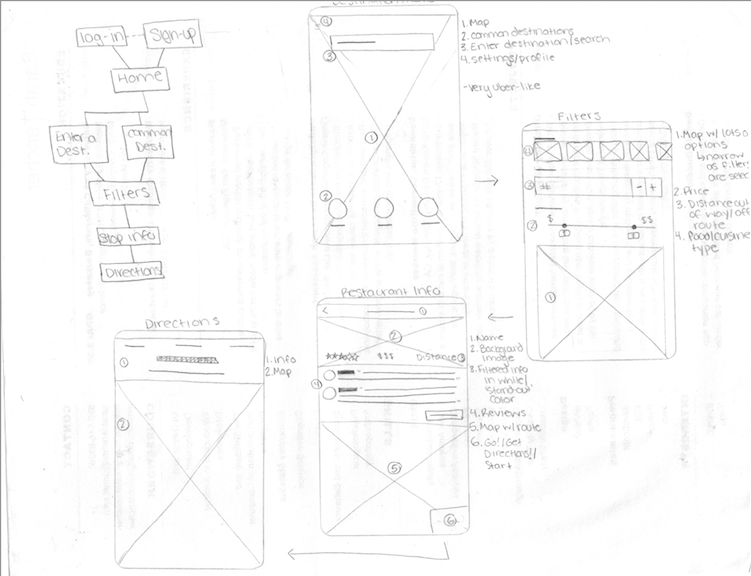
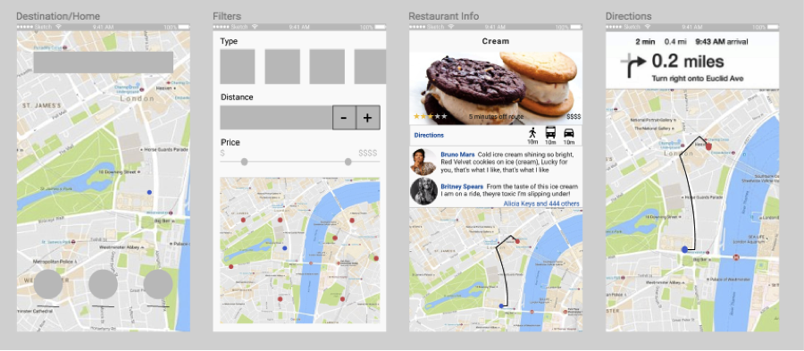
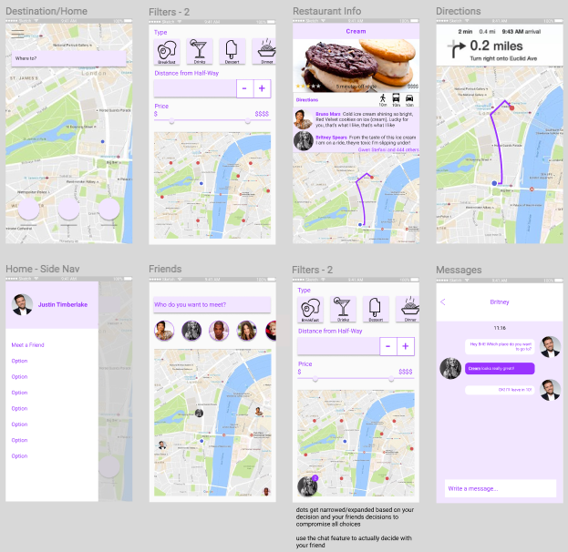
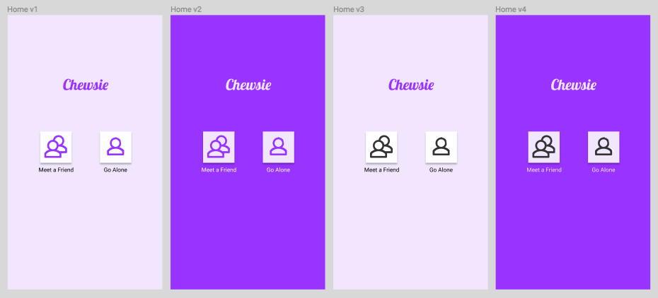

Sarah Tencher
Chewsie
How might we make it easier to find good restaurants on ones route? People need a convenient way to find new places to eat on the go and most people tend to want that place to be on their way to their final destination. Similarly, when meeting someone for a meal, it is unnecessarily difficult to find a great place that both parties are happy with that is also somewhere in between. Chewsie attempts to solve these problems by providing convenient routes through selected food options, as well as routes to meeting places between connected friends.
Goals and Research
- • provide a way to help users discover new restaurants
- • help users find convenient routes
- • allow users to socially connect with others over meals and restaurants
Using personas and storyboards, I was able to explore the space my design might operate in and discover user needs that features could address. Through user interviews, I aimed to determine what one looks for when deciding where to eat. Asking questions about how they currently find restaurants, as well as how they view and write restaurant reviews led to key insights that drove the rest of the design process. Some insights include:
- • people tend to dislike going out of their way
- • people value quality of food and convenience
- • most people do not want to commute longer than 10-15 minutes to find a place to eat
- • people tend to generally know what kind of food they want, it's just a matter of finding a place that serves that type of food
- • people trust their friends more than strangers
"I would believe a few friends' bad reviews over a lot of strangers' good reviews"
Low-Fidelity Sketches
Using key insights from user interviews, I began sketching very simple user flows and app screens to use to test the core functionality and features.
Using paper prototypes I gave participants the task of finding a place to eat along their route home. Through this first round of user testing, I learned that people seemed to appreciate visuals such as maps, icons, and images over just plain listed text. I also gathered that the overall workflow and navigation between pages was not as intuitive as I thought and needed to be revised in the next iteration.
Mid-Fidelity Prototype
To remedy navigation issues between pages, I added clear labels such as ‘directions’, as seen on the third screen above. This is a style very similar to that used in apple maps, and since that is a familiar application, users did not have any difficulty in understanding its purpose and use. I also used actual maps with locations plotted on them in this prototype to better indicate to users the purpose of the filters.
I used InVision to test this prototype with users and received valuable feedback both about usability and aesthetic design. Users found some of the wording confusing, mainly the 'distance' filter. The purpose of this filter is to select the amount of time off of the optimal route to their destination the user is willing to go to get food. Simply using the label 'Distance' was too ambiguous and needed further attention. Aside from this core feature, everything else proved intuitive and was used as intended. Users were able to easily achieve their goals of finding a restaurant along their route.
High-Fidelity Prototype
In the high-fidelity prototype, I decided to include another feature to allow users to connect with friends. This feature determines the distance between the two users and presents filters for selecting a restaurant somewhere between the two. This feature exemplifies the social aspect of the app which really differentiates it from similar apps like Yelp. Implemented as an option in the side-bar of the app, this feature can be reached from the home screen. In addition, after selecting someone to meet with, chat functionality with that user would be enabled, depicted by a profile icon in the bottom left corner of each screen. In retrospect, I should have tested this additional feature in a low-fi way rather than high-fi since the idea was not fully developed and could have really used fundamental functionality feedback.
In this iteration I included some accent colors in 2 shades of purple (#f2e6ff and #9933ff) along with a white background. Since this app is to be used while en route (most likely walking in the bright outdoors), I chose colors that would be visible in the sun. Additionally, I tried to use clearer language in this iteration, for example ‘Distance’ became ‘Distance from Half-Way’ for the social option and ‘distance off route’ for the solo option. Through the final round of testing, I realized that these labels were still ambiguous and confusing.
Since the high-fi prototype is highly stylized, I received feedback about the appearance and style of the application more than usability. This feedback revolved around the ‘restaurant info’ page. One point included the idea that the map and directions are more important than the reviews, and should therefore be higher on the page. Another detail involved the amount of padding around text reviews. There were also some usability issues surrounding the added 'Meet a Friend' feature, specifically in the form of questions about what else would be included in the side-bar and how opening the sidebar itself is an extra step if your initial goal when opening that app is to meet with a friend.
Final Prototype
User testing inspired me to remove the side-bar altogether in the final iteration and design a new landing page with an app title and two selection options, "Go Alone" or "Meet a Friend". According to Hicks Law, the more options one has the longer it takes them to make a decision; simply presenting these two options enables users to make a quick decision and accomplish their goals in a more efficient manner. Since there were a few different, yet similar ways to design this home screen, I used A/B testing which resulted unanimously with the leftmost screen.
In this final iteration I also tried to address the issue of ambiguous terminology by using "Additional Time" on both the "Go Alone" and "Meet a Friend" filter screens instead of "Distance from Half-way". I am not convinced that this phrase will be completely unambiguous and in the future, with more user testing, I will attempt to find a better and even less ambiguous phrase.
Future Directions and Reflections
With more time and few more rounds of user testing I would hope to refine Chewsie even further. I would have focused more on the messaging/communication between friends aspect, perhaps including a more conclusive way for each person to know which restaurants the other is considering within the radius of their meeting point.
Upon returning to these designs, I have realized that the visual design aspect needs a lot of work. The screens appear clutered and there are many different ways to present the same information more elegantly. Further, there are certain functions such as navigation that have not been fleshed out well enough. I would love to return to this school project in the future and fix these design bugs and improve the overall design of this app.